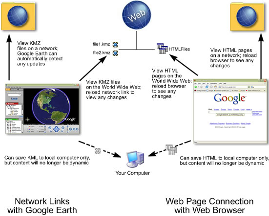

Sharing Places Information
The section describes how you can share placemarks, shapes, and folder data with other
people - including both users and non-users of Google Earth. You can share your places
data by:
Note - You can also share places information with other Google Earth
users via the Google Earth Comunity BBS website. For more information, see Sharing a Point of Interest.
Emailing an Image
At this time, emailing a Google Earth image on the Mac is available only through the
Mail, Entourage and Eudora applications. You can email the current view of the earth
shown in the Google Earth 3D viewer as:
- An image file for people who don't have Google Earth
- A KMZ file for other users of Google Earth
When you email an image, a JPEG file is automatically attached to an outbound email
message. When you email the view as a KMZ, a KMZ file is automatically attached to an
outbound email message. To email an image:
- Do one of the following:
- Click File > Email > Email Image.
- Type Ctrl+Alt+E (Windows and Linux only)
- Click on the email icon
 on the toolbar and choose Email Image.
on the toolbar and choose Email Image.
- In the Select Email Service window, choose your default email program or
your Gmail account. If you use your Gmail account, you will be prompted to sign in if you
have not already.
Before selecting your email service, select the Remember this setting... check
box if you want to use the same email service every time you email a view. You can
always change your email preferences later by selecting Tools >
Options > General (Windows/Linux) or Google Earth >
Preferences (Mac) and clicking on the General tab.
- Wait while the Google Earth software sends the data to your email application. A new
email window appears with the image file. (This can take a few seconds.) The image is a
JPG file of the current view in the 3D viewer.
- Fill in the recipient's email address and any other information in the body and send
the email.
When you email an image, the quality of that image is identical to the quality available
for the Save Image feature in Google Earth.
Emailing Places Data
Note - On the Mac, you can only email through the Mail, Eudora and
Entourage applications.
In addition to emailing a view as a KMZ file to other users of Google Earth, you
also can email places data in two other ways:
- Attach a KMZ file or folder saved to your computer's hard drive to an email. If you
followed the instructions listed in Saving Places
Data, locate your saved KMZ file and attach it to an outbound email as you would with
any attachment.
- Email a placemark that is centered in your 3D viewer directly from Google Earth (see
below).
To email places data:
- Do one of the following:
- Click File > Email > Email Place .
- Type Ctrl + E (
 + E on the Mac)
+ E on the Mac)
- Click on the email icon on the toolbar and choose Email Place.
- Right click (CTRL click on the Mac) the appropriate placemark in the Places panel and
choose Email.
- In the Select Email Service window, choose your default email program or
your Gmail account. If you use your Gmail account, you will be prompted to sign in if you
have not already.
Before selecting your email service, select the Remember this setting... check
box if you want to use the same email service every time you email a view. You can
always change your email preferences later by selecting Tools >
Options > General (Windows/Linux) or Google Earth >
Preferences (Mac) and clicking on the General tab. Wait while the
Google Earth software sends the data to your email application. A new email window
appears with the KMZ file. (This can take a few seconds.)
- Fill in the recipient's email address and any other information in the body and send
the email.
Things to consider:
- When you email KMZ files that reference custom icons or image overlays from your
local file system those items are included with the placemark data. For this reason, KMZ
files that include imagery overlays might be larger than those containing a simple
placemark.
- If you are sending a placemark file to a user of a Google Earth (Keyhole) client
version 2.2 or lower, the recipient will not be able to view the placemark. The file
format for placemarks has changed for Google Earth versions 3.0 and higher. Send an image
file instead.
Troubleshooting Email Issues
Note - On the Mac, you can only email through the Mail, Eudora and
Entourage applications.
If your email application does not respond to the Email View command, you may
need to set the default email program. To do this in Windows, open the Control
Panel from the Start menu and select Internet Options. Click the
Programs tab, select the default email program that you use from the
E-mail drop-down list, and click Apply. You should now be able to send
a view with your email application. To do this on a Mac, open Mail. Click Mail >
Preferences. Pick the email application you'd prefer as your default email handler.
Sharing Data Over a Network
In addition to saving placemarks or folders to your local computer, you can also save
place data to a web server or network server. Other Google Earth users who have access to
the server can then use the data. As with other documents, you can create links or
references to KMZ files for easy access. Storing a placemark file on the network or on a
web server offers the following advantages:
-
Accessibility - If your place data is stored on a network or the Web,
you can access it from any computer anywhere, provided the location is either publicly
available or you have log in access.
-
Ease in Distribution - You can develop an extensive presentation
folder for Google Earth software and make that presentation available to everyone who
has access to your network storage location or web server. This is more convenient than
sending the data via email when you want to make it persistently available to a large
number of people.
-
Automatic Updates/Network Link Access - Any new information or changes
you make to network-based KMZ information is automatically available to all users who
access the KML data via a network link.
-
Backup - If for some reason the data on your local computer is corrupt
or lost, you can open any of the KMZ files that you have saved to a network location,
and if so desired, save it as a local file again.
Note: Before you can create a network link to an item in Google Earth,
you must first store that place data on a server.
This section covers the following topics:
Saving Data to a Server
To make your placemarks or folders available to other people via a server, you need to
first save the file to the appropriate location.
-
Network Server - To save a folder or placemark to a location on your
network, simply follow the steps in Saving Places
Data and save the file in a location on your company network rather than to your
local file system.
-
Web Server - To save a placemark or folder to a web server, first save
the file to your local computer as described in Saving
Places Data. Once the file is saved on your local computer as a separate KMZ file,
you can use an FTP or similar utility to transfer the file to the web servers.
If you want users to be able to open KML and KMZ files from a web server, you may need to
add MIME types for the server. These are:
- application/vnd.google-earth.kml+xml kml
- application/vnd.google-earth.kmz kmz
Opening Data from a Network Server
If you are working in an organization where place data is saved to a network that you
have access to, you can open that data in the same way you would open a saved KMZ file on
your local computer.
-
From the File menu, select Open (Ctrl + O in Windows/Linux, + O on the Mac) - Navigate to your network places and locate the KMZ or KML
data you want to open in Google Earth. Select the file and click the Open
button. The folder or placemark appears in the Places panel and the 3D viewer
flies to the view set for the folder or placemark (if any).
Files opened in this way are NOT automatically saved for the next time you use
Google Earth. If you want the placemark or folder to appear the next time you use
Google Earth, drag the item to your My Places folder to save it for the next
session.
-
Locate the file you want to open - Once you have located the file on
your network places, you can simply drag and drop the KMZ file over the Places
panel. The 3D viewer flies to the view set for the folder or placemark (if any).
When you use the drag-and-drop method of opening a placemark or folder, you can drop
the item over a specific folder in the Places panel. If the My Places
folder is closed and you want to drop it there, just hold the item over the My
Places folder until the folder opens up and you can place the item within
subfolders or in the list. Items dropped in the My Places folder appear the
next time you start Google Earth. Otherwise, you can drop the item in the white space
below the Places panel so that it appears in the Temporary Places
folder. Items opened this way appear only for the current session of Google Earth
unless you save them.
About Network Links
The network link feature in Google Earth provides a way for multiple clients to view the
same network-based or web-based KMZ data and automatically see any changes to the content
as those changes are made. A network link allows for content publishing in a manner
similar to web page/web browser content delivery:
-
A network link provides a way to deliver dynamic data to multiple Google Earth
users. When users connect to your KMZ file via a network link, either you or
they can specify how often to refresh the data in the file. This way, regular updates
made to the content by one person are automatically reflected in all connected clients.
-
A network link is intended as a view-only reference to published
content. Just as web pages are viewed by many people but only modifiable by
those with permission, place data content can be linked to and seen by multiple users
while set to be modifiable only by one author. As with web pages, users who are viewing
the content can always save that content to their hard drive, but they can only receive
dynamic content via a network link.
The following figure illustrates the parallels between web-based content and KMZ content
via a network link using Google Earth.

Creating a Network Link
Before you can create a network link, the content you
want to link to must exist on the network or web server that you are linking to. If you
are authoring the content, see Saving Data to a Server for
details about saving KMZ files to a web or network server. If you are only linking to the
content, be sure you know either the network location of the file or the URL if it is
located on a web server.
- Choose any one of the following ways to start:
- Select Network Link From the Add Menu. Select Network
Link from the pop-up menu.
- Right-click (CTRL click on the Mac) on a folder in the My Places Panel.
Select Add > Network Link from the pop-up menu. When you add a network
link in this way, the selected folder is automatically set as the container for the
network link.
The New Network Link dialog box appears. Enter the name of your link in
the Name field. Enter the full path of the KMZ file in the Link
field, or browse to the file location if the file is located on a network. You can use
a URL to reference the KMZ, such as http://www.test.com/myKMZ.kmz. The 3D
viewer immediately flies to the default view for the linked data.
- Enter descriptive text or HTML.You can enter this data in the same way you would for
a regular folder. See Editing Places and Folders for more
information.
- (Optional) Click the View tab to change the default view that this network link
presents to users. Click Snapshot current view to use your current view in
Google Earth. If your network link has more than one placemark, click Reset to
display all these placemarks to users.
Note - The text you enter in this description is your description of the
link only and is not viewable by anyone else linking to the KMZ file. Only you will be
able to see the description you enter here (unless you email your link folder to other
people). This is similar to creating a bookmark for a web page and then adding a
descriptive note about the bookmark.